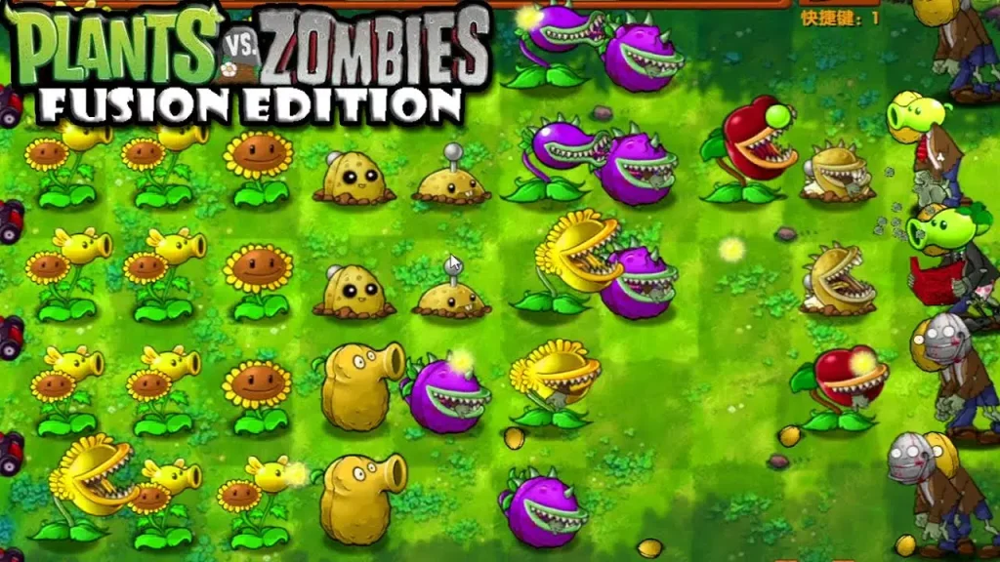

Emmener
PvZ Fusion, le pôle francophone
Open source, bénévole
- Problème
- Une traduction française en retard de plusieurs années, pleine d’erreurs, et des bénévoles qui arrivent sans méthode.
- Décision
- Structurer le pôle : accueil et formation des nouveaux, revues systématiques, documentation, et des outils en Python pour repérer ce qui manque à chaque version.
- Résultat
- En dix mois, une version à jour et propre. Une vingtaine de contributeurs formés, dix au plus fort, et une nomination comme mainteneur du projet multilingue.
« La qualité et la sincérité des échanges démultiplient les résultats. »